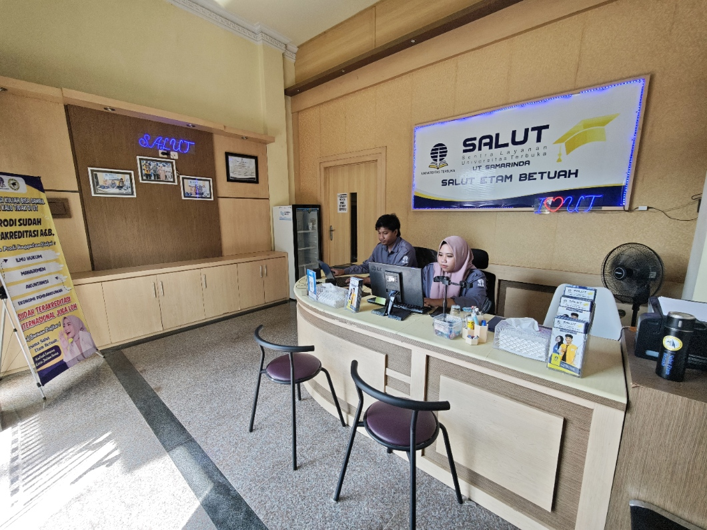

Universitas Terbuka Samarinda 2026, Panduan Lengkap Kuliah UT di Samarinda Bersama Salut Etam Betuah

Ingin kuliah di Universitas Terbuka Samarinda tapi bingung mulai dari mana? Salut Etam Betuah adalah mitra resmi UT terpercaya di Samarinda: dengan konsep #KuliahTerurus #KerjaJalanTerus, kami memastikan perjalanan kuliah UT Anda lancar dari awal hingga wisuda.
Apa Itu Universitas Terbuka di Samarinda?
Universitas Terbuka (UT) adalah Perguruan Tinggi Negeri (PTN) milik pemerintah Indonesia yang menggunakan sistem belajar jarak jauh. Di Samarinda, Kalimantan Timur, layanan UT tersedia melalui Salut Etam Betuah, Sentra Layanan UT resmi yang telah beroperasi sejak 2018.
Berbeda dengan universitas konvensional, kuliah di Universitas Terbuka Samarinda tidak memerlukan jadwal hadir setiap hari. Mahasiswa belajar secara mandiri: kapan saja, di mana saja, sambil tetap bekerja. Inilah yang kami sebut: #KuliahTerurus #KerjaJalanTerus.
Prodi Terpopuler Universitas Terbuka Samarinda 2026
Cara Daftar Universitas Terbuka di Samarinda via Salut Etam Betuah
Mengapa Kuliah Universitas Terbuka di Samarinda via Salut Etam Betuah?
- #KuliahTerurus, semua urusan administrasi UT dihandle tim profesional kami, Anda fokus belajar
- #KerjaJalanTerus, tidak perlu cuti atau resign, kuliah UT fleksibel 100%
- 5000+ mahasiswa telah berhasil kuliah dan wisuda dari UT Samarinda bersama kami
- Rating ⭐5.0 Google dari 200+ ulasan nyata mahasiswa UT Samarinda
- SALUT lolos audit BDO, transparansi dan akuntabilitas berstandar internasional
- Biaya terjangkau, SPP mulai Rp 1,5 juta/semester, bisa cicil via Bank BTN di kantor kami
- Layanan seluruh Kaltim, via WhatsApp untuk mahasiswa dari Kutai, Berau, Balikpapan, Bontang
Daftar Universitas Terbuka Samarinda Sekarang!
Salut Etam Betuah siap bantu Anda mulai kuliah UT Samarinda: konsultasi gratis, proses mudah, tuntas sampai wisuda.
💬 Chat WA, Daftar UT Samarinda